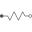
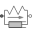

PartialCompliantPartial model for the compliant connection of two rotational 1-dim. shaft flanges |
|
Information
This information is part of the Modelica Standard Library maintained by the Modelica Association.
This is a 1-dim. rotational component with a compliant connection of two rotational 1-dim. flanges where inertial effects between the two flanges are neglected. The basic assumption is that the cut-torques of the two flanges sum-up to zero, i.e., they have the same absolute value but opposite sign: flange_a.tau + flange_b.tau = 0. This base class is used to built up force elements such as springs, dampers, friction.
Connectors (2)
Extended by (2)
|  |
Modelica.Mechanics.Rotational.Components Linear 1D rotational spring |
|  |
Modelica.Mechanics.Rotational.Examples.Utilities Linear 1D rotational spring and damper in parallel (phi and w are not used as states) |